Ezequiel Fernández 1928 · Ñuñoa
Edificio
Barrio Nuevo
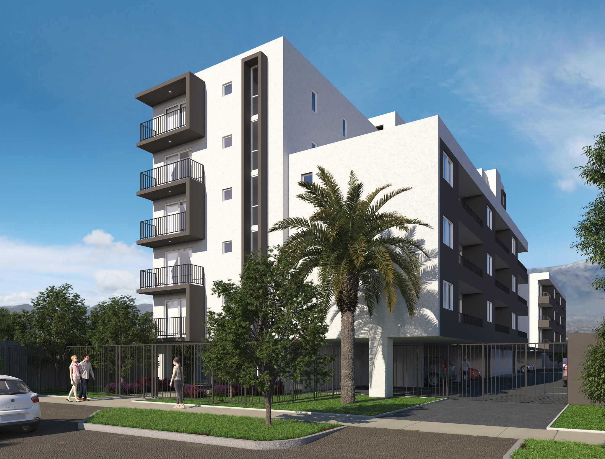
Edificio de departamentos ubicado en Ñuñoa.
- Ubicación
- Ezequiel Fernández 1928, Ñuñoa
- Año
- 2016
- Tipología
- Edificio de departamentos
- Superficie
- 6.307 m²
- Unidades
- 69 departamentos
- Mandante
- Inmobiliaria Barrio Nuevo
- Arquitectura
- Franulic y Asociados
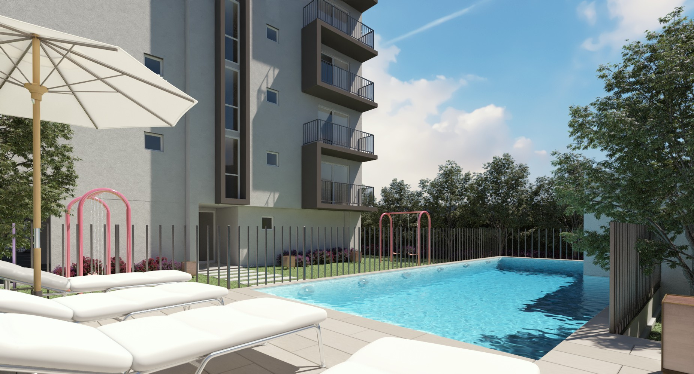
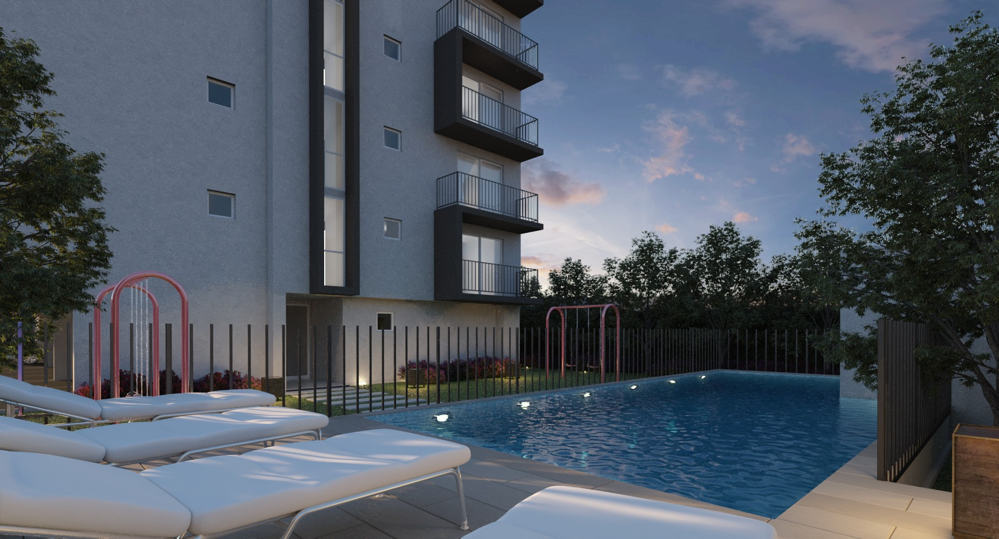
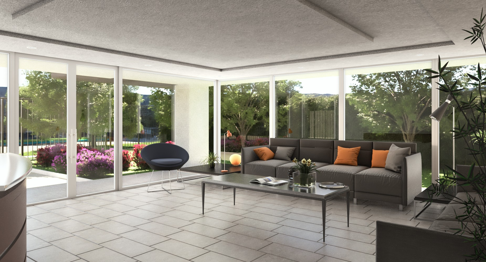
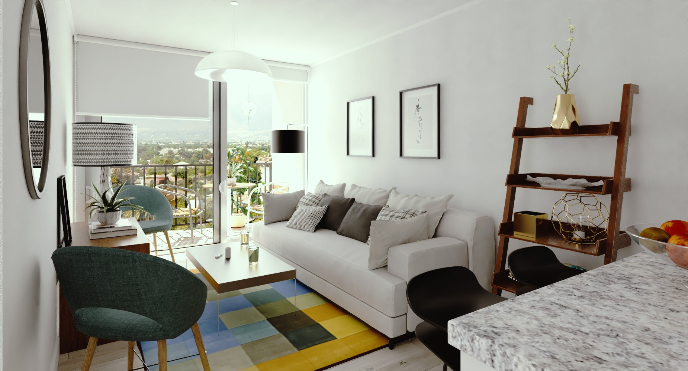
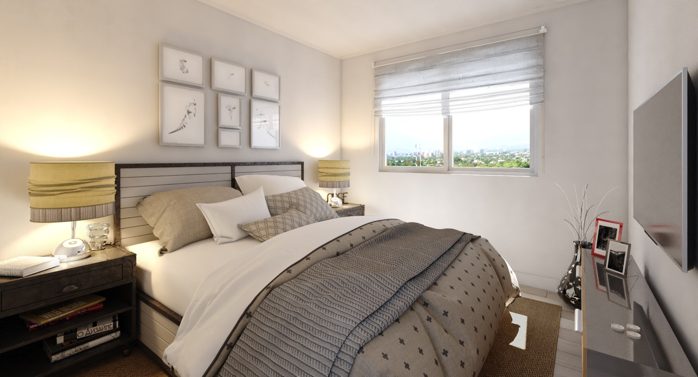
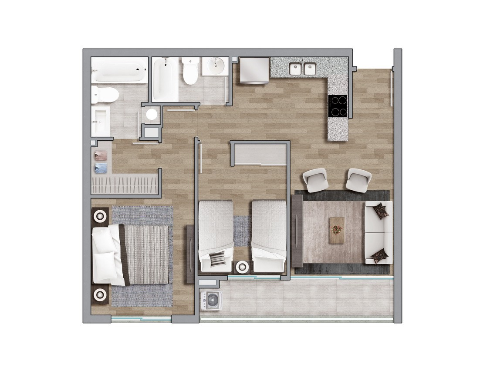
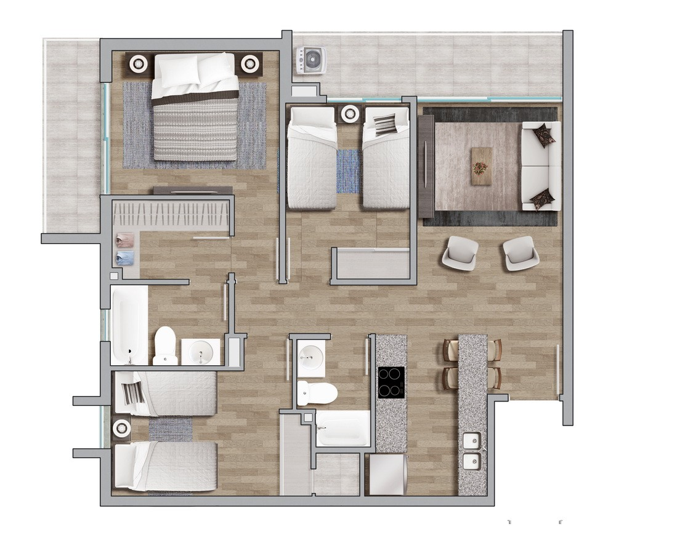
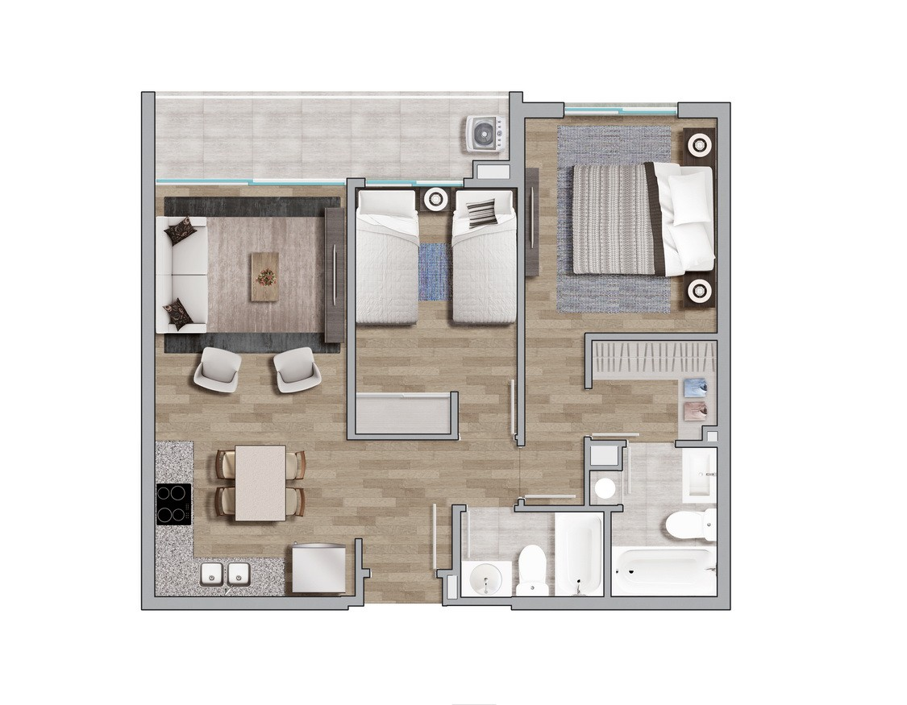
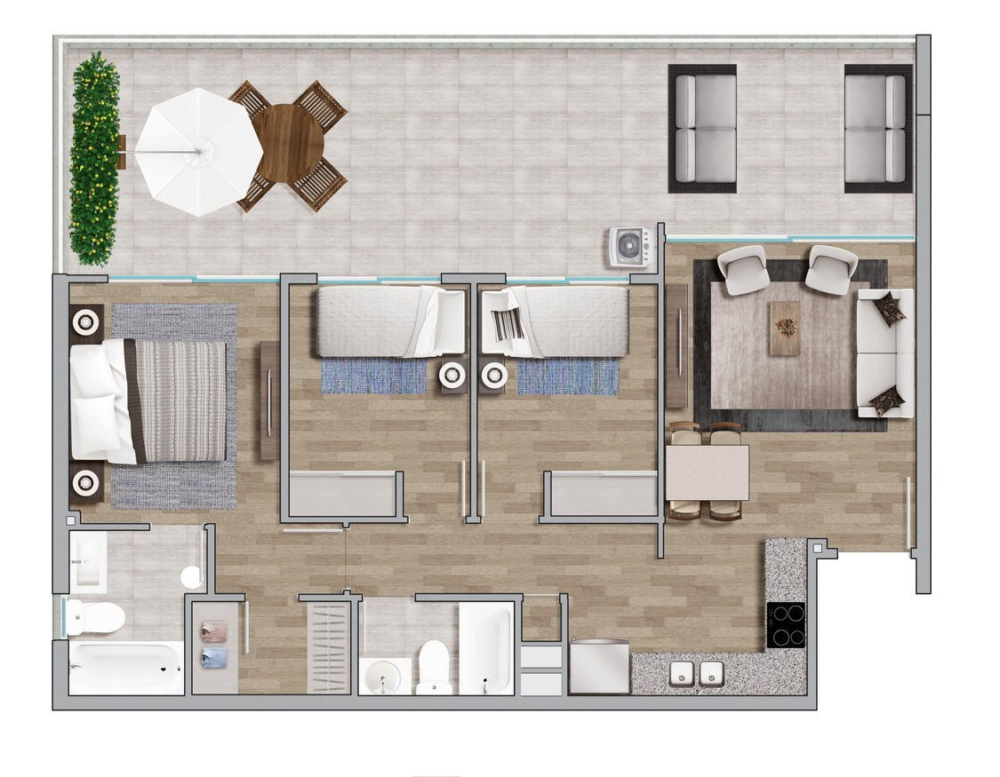
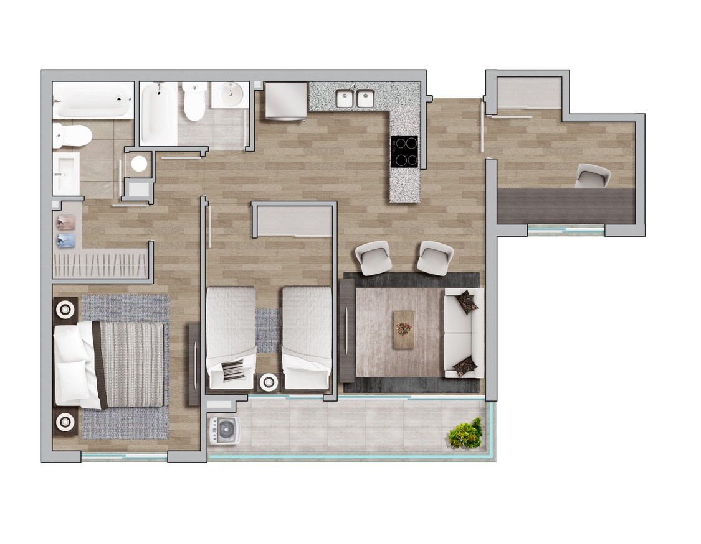